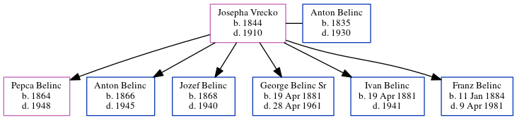

Josepha Maria Belinc (née Vrecko) 1844 - 1910
[ Home ] | [ Calendar ] | [ Surnames Index ] | [ Family History ]Josepha Vrecko was born in 1844 and had 6 children with Anton Belinc: Pepca, Anton, Jozef, George Anthony Sr, Ivan and Franz.
She died in 1910.
Children
- Pepca was born in 1864
- Anton was born in 1866
- Jozef was born in 1868
- George Anthony Sr was born on Apr 19, 1881
- Ivan was born on Apr 19, 1881
- Franz was born on Jan 11, 1884
Family Tree
Generated by ged2site. Last updated on Jun 25, 2024